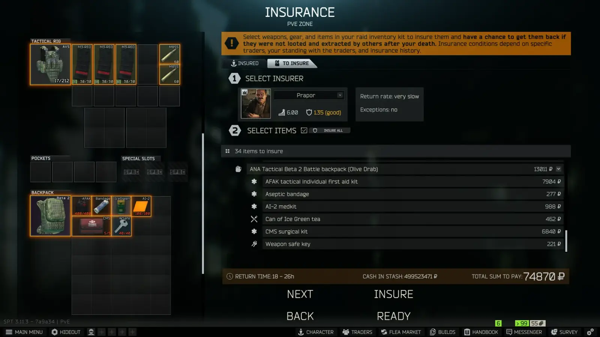

You inSure About That?!
- Downloads
- 626
- Favourites
- 0
Description:
Got one more mod from my “personal collection”; Actually it was just a component of a larger server mod that I split off because I realized there isn’t currently a mod on the hub that makes all items insurable (check the config). This mod is admittedly a little finicky as it was a quick and dirty solution to a problem I had (see the known issues). Take it for what it is

Mhmmm, just like that

There is a configuration file in the mod folder - config/config.jsonc where you’ll find the following:
- For some reason the mod also sometimes allows for you to drop/discard insured items and get them back, similar to the Insurance Fraud mod and its 3.11 counterpart/update. This is unintentional and I haven’t bothered to find out why I’m also probably not going to. Sowwy.
- Because of the way THE CITY’s ID system works, insuring stacks is finicky. When you insure a stack of ammo for example, you are not insuring every individual round. You are insuring the stack itself. So if you remove a round from the stack, the stack remains insured, but that round loses its insured status. This extends to nearly all types of stacks, and even ammo in magazines (if configured to be insurable).
- I haven’t tested every item, so there may be some weird exclusions. (actually I’m pretty sure I know of one already; the leatherman multitool has its own parent class all on its own for some reason and I didn’t add it to this mod)
- Will this mod work with Insurance Plus?… I don’t know. Probably. But I didn’t check. If someone finds out put it in the comments and I’ll update this section.
- This mod has a few functions that are covered by other mods as well, such as SVM, and Trader QoL. All I can say is if you are using multiple of these double check your load order and configs to make sure you don’t overwrite or contradict something. Example: you make Insurance work on labs in SVM but then its still set to false in this mod and it overwrites it. I might add more configs to enable and disable whole parts of the mod if people really want to use both mods and this type of conflict becomes a headache. Or I might just remove the part you can configure with other mods. We’ll see.
- I don’t know how Lacy’s MergeConsumables handles item ID’s when merging so I can’t say if insurance will persist when you merge items. Might need some trial and error.
- HOWEVER, the state of support for this mod is very similar to the other mod I uploaded today as they’re both from my “personal collection” and I’m sharing them because I realized there wasn’t currently anything on the hub that does exactly what they do; But further development on them will happen if I see fit, and providing support for these mods is a secondary priority for me right now.
- That said, again, if something turns out to be ridiculously broken, lmk and I’ll try to fix it.
This is a VERY quick and dirty mod that could definitely be improved, but because its not a priority for me right now, if someone else wants to take it, fix or improve it and upload an improved version, I would be completely unbothered by that “Steal this mod”.
- Credit to InternalError_‘s insurable items mods from WAYYYY back in the day for providing me with a rudimentary framework for this mod, as well as CreamCheese’s update of those mods for SPT 3.7. I essentially just expanded the functionality of those mods and updated for 3.11.
Finally,
If you like my (other) mods (not this one) and wanna show me a little support, you can:
Also in lieu of donations to me, I also fully endorse donating to the Lupus Foundation of America and the National MS Society. I personally have Systemic Lupus, and my mother had MS for most of her life before she passed - so these causes mean a lot to me. Giving is appreciated.
Version
1.0.0
No description was available in the snapshot.